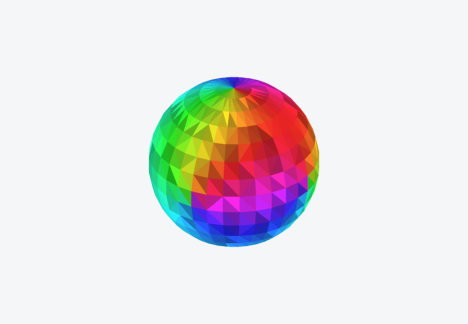
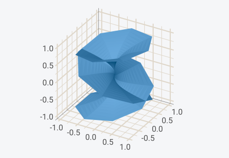
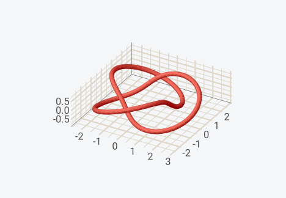
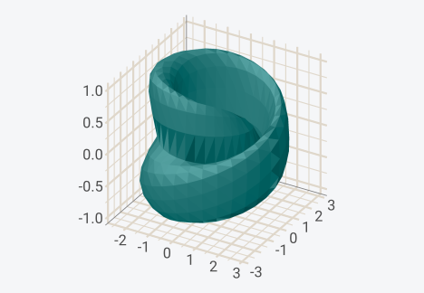

Complex functions, knots and immersed surfaces
Source:vignettes/articles/complex-knots.Rmd
complex-knots.RmdA complex function of a complex variable maps a plane to a plane, which needs four real dimensions to graph. Colour can carry two of them, and a surface over the plane or the sphere carries the rest. Knots and immersed surfaces are curves and surfaces whose shape in space is the subject. This article draws each with a dedicated stat. Installation is covered in Get started, and Surfaces, solids and fields covers parametric surfaces in general.
Domain colouring on the Riemann sphere
Domain colouring paints each point with the phase of as hue (Wegert 2010). Zeros are the points where all hues meet in counter-clockwise order, and poles are where they meet in the opposite order. On the Riemann sphere, the complex plane closed by a point at infinity, the behaviour at infinity is visible too. has one zero at 1 and poles at .
ggplot() +
stat_riemann_sphere_3d(fun = function(z) (z - 1) / (z^2 + 1), n = 32) +
coord_3d(backend = backend_3d("raster"), axes = character(),
panes = character(), box = "none")
The raster backend keeps the many small faces of the colouring from producing a large vector file.
Riemann surfaces
An inverse function such as
has several values at each point. Its Riemann surface stacks one sheet
per value and joins them so the function is single-valued on the surface
(Poelke and Polthier 2009).
stat_riemann_surface_3d() takes the forward function, here
,
and the number of sheets.
ggplot() +
stat_riemann_surface_3d(fun_inverse = function(w) w^3, sheets = 3, n = 24,
fill = "#2E6F9E") +
coord_3d()
Möbius transformations
A Möbius transformation
maps circles to circles on the Riemann sphere. mobius_3d()
returns the map as a function that accepts complex numbers, points on
the sphere or points in the upper half-space. The inversion
swaps 0 and infinity and fixes 1.
f <- mobius_3d(a = 0, b = 1, c = 1, d = 0)
f(c(0, 1, Inf))
#> [1] Inf+0i 1+0i 0+0i
f(rbind(c(0, 0, 1), c(0, 0, -1)), model = "sphere")
#> x y z
#> [1,] 0 0 -1
#> [2,] 0 0 1On the sphere the same map swaps the north and south poles.
Torus knots
A
torus knot winds
times around the axis of a torus and
times through its hole; it is a knot when
and
share no factor. stat_knot_3d() draws it as a tube. The
torus knot is the trefoil.
ggplot() +
stat_knot_3d(p = 2, q = 3, radius = 0.12, n = 120, sides = 10, fill = "#B5342B") +
coord_3d(aspect = "data")
Gallery builds the same
trefoil from a data frame with geom_tube_3d().
Immersed surfaces
The Klein bottle and Boy’s surface cannot be built in
three-dimensional space without passing through themselves.
stat_immersed_3d() draws standard immersions of such
surfaces: "klein_figure8", "klein_bottle",
"boy", "cross_cap" and the Möbius strip
"moebius".
klein <- ggplot() +
stat_immersed_3d(type = "klein_figure8", n = c(32, 20), fill = "#2A7A7A") +
coord_3d()
klein
The scene resolves each crossing exactly, so the faces in front cover
the ones behind on both sides of the self-intersection. Meshes and intrinsic
geometry draws the crossing curve itself with
stat_self_intersection_3d().
References
Poelke, K. and Polthier, K. (2009). Lifted domain coloring. Computer Graphics Forum 28(3), 735-742. https://diglib.eg.org/handle/10.1111/v28i3pp0735-0742
Wegert, E. (2010). Phase plots of complex functions: a journey in illustration. https://arxiv.org/abs/1007.2295